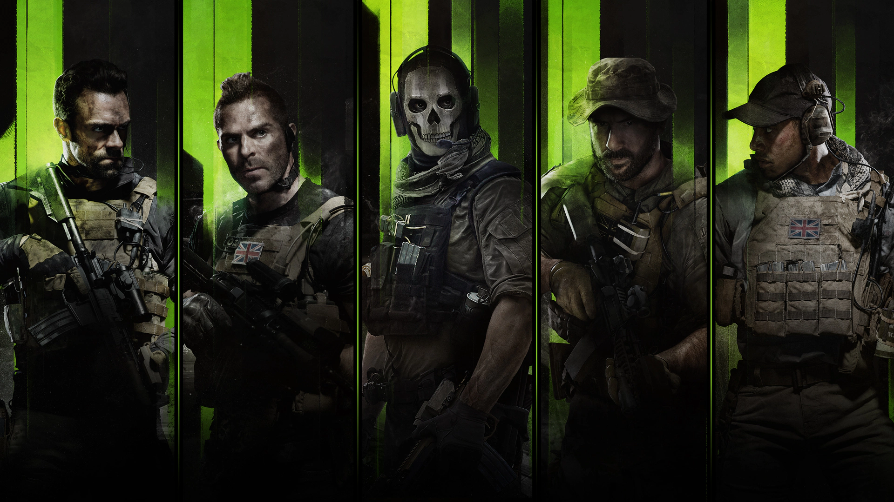

Call of Duty: Modern Warfare II (2022) is a blockbuster first-person shooter developed by Infinity Ward, serving as a direct sequel to the 2019 Modern Warfare It features a,gritty campaign centered on Task Force 141, advanced AI, enhanced water mechanics, and a highly,customizable weapon system, making it the fastest $1 billion+ grossing game in the series.
Call of Duty
Key Facts About Modern Warfare II (2022)
Release & Platforms: Released October 28, 2022, for PlayStation 4/5, Xbox One/Series X/S, and Windows via Steam/Battle.net.
Campaign Setting: Follows Task Force 141 (Price, Ghost, Soap, Gaz) in a global, "drug war" against cartels and terror threats, featuring high-stakes, realistic,infiltration missions.
Gameplay Innovations: Features a new, next-gen game engine with advanced AI, improved water physics, and overhauled vehicle mechanics.
Multiplayer Features: Includes classic modes alongside new ones like Knock Out and Prisoner Rescue.
Gunsmith & Movement: Redesigned Gunsmith for advanced weapon customization, plus revised,movement mechanics and a 3rd-person playlist.
Commercial Success: Broke franchise records by reaching $1 billion in revenue faster than any previous Call of Duty game.
Integration: Served as the foundation for Call of Duty: Warzone 2.0 and operates within the cross-game Call of Duty HQ launcher.
Co-op Mode: Continues the saga through "Special Ops," an evolved co-op mode focusing on tactical,team gameplay.

